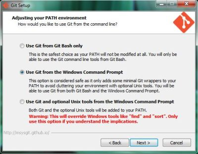
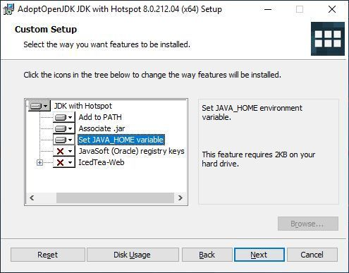

IDE Setup
This Tutorial explains how to setup Visual Studio Code to work on and contribute to devon4ng projects with your Windows computer.
To get started follow these steps:
-
Download and install Git for Windows:
Install with the option Use Git from the Windows Command Promptbut without Windows Explorer integration!-
For Windows Explorer integration install Tortoise Git (optional)
-
-
Download and install the recommended .NET Framework Runtime & Developer Pack
-
Download and install the latest AdoptOpen JDK (with the HotSpot JVM):
-
During installation activate the option for
Set JAVA_HOME variableReboot your PC to put the newly set JAVA_HOME variable into effect!
-
-
Get Visual Studio Code:
-
If you are NOT a member of Capgemini, download VS Code, install and run it.
-
If you ARE a member of Capgemini, download the current devonfw distribution and unzip it to a directory of your choice. Navigate to
~\software\vscodeand runCode.exe.
-
-
Install the devonfw Platform Extension Pack for VS Code:
-
In VS Code, select the 'Extensions' icon in the Activity Bar to the left, then search and install the
devonfw Platform Extension Pack… -
or follow this link, click 'Install', confirm the dialogue and open the URL with VS Code.
-
-
Download and install the current version of Node.js
-
Install TypeScript support and the Angular CLI:
-
In VS Code, open a command prompt via
Terminal > New Terminal -
now run the command
npm install –g typescript -
also run the command
npm install –g @angular/cliYou can check, what modules you have installed by running npm list -g. You can also check, what version of the Angular CLI you are using by runningng version.
-
-
(OPTIONAL) Configure Yarn to be your package manager:
-
Download and install the stable version of Yarn
-
Now run the command
ng config -g cli.packageManager yarnWe feel like Yarn is quite a bit faster and generally more usable than npm. However, if you are already familiar with npm, you can continue using it.
-
Finally, if you are using the devonfw distribution, we recommend storing all your devon4ng projects in the folder workspaces_vs. This allows you to execute the script update-all-workspaces.bat, in order to generate a launch script for each individual project called vscode-<YourProjectName>.bat.